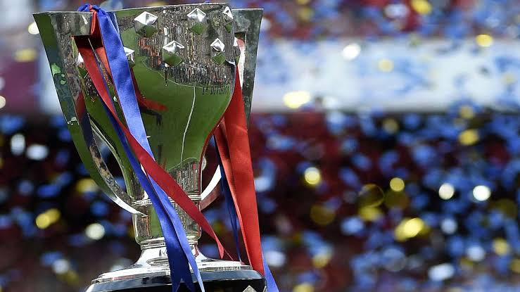
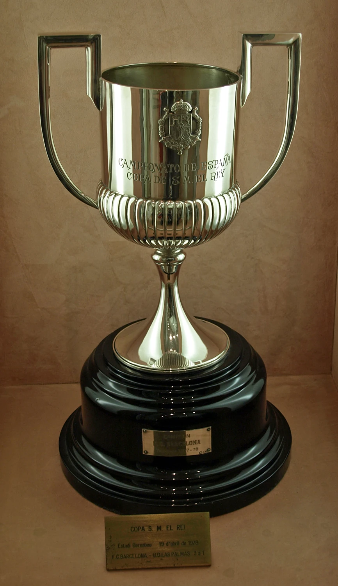
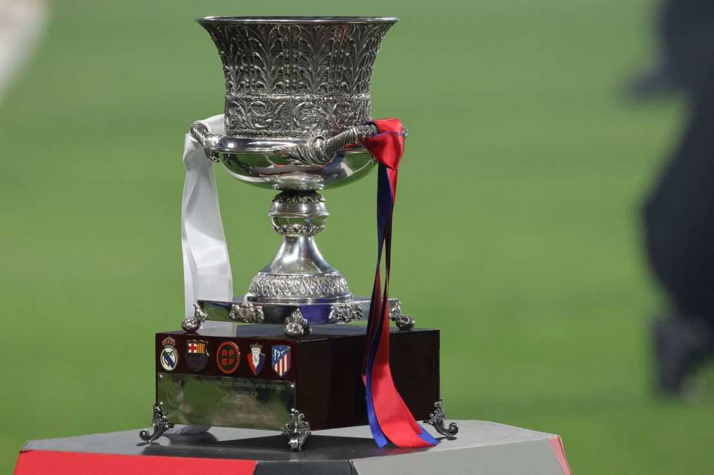
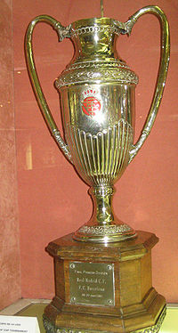
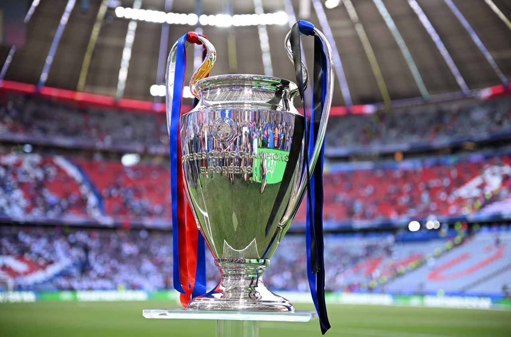
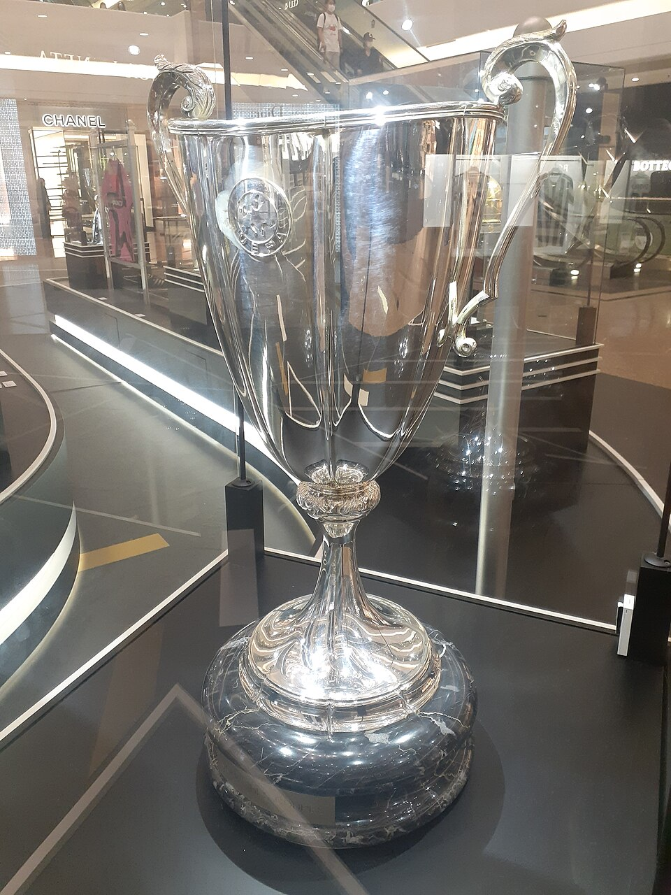
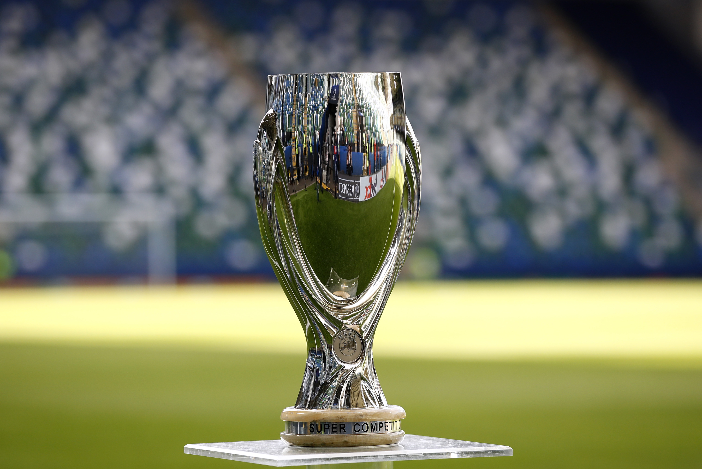
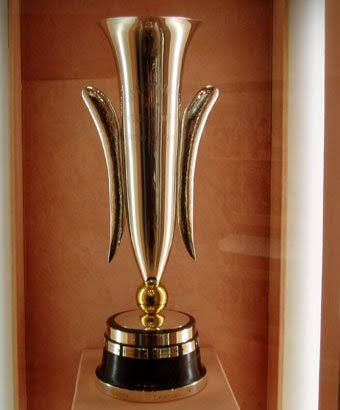
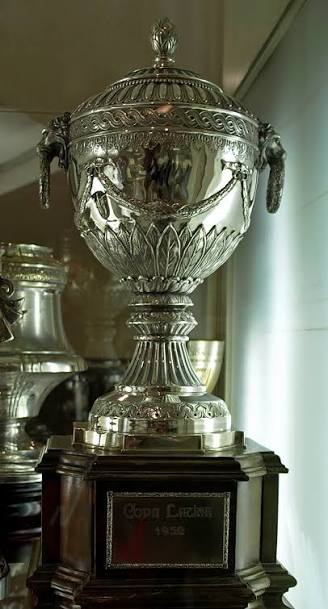
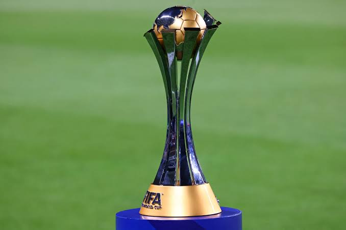

Títulos españoles
La Liga — 29
- 1928/29
- 1944/45
- 1947/48
- 1948/49
- 1951/52
- 1952/53
- 1958/59
- 1959/60
- 1973/74
- 1984/85
- 1990/91
- 1991/92
- 1992/93
- 1993/94
- 1997/98
- 1998/99
- 2004/05
- 2005/06
- 2008/09
- 2009/10
- 2010/11
- 2012/13
- 2014/15
- 2015/16
- 2017/18
- 2018/19
- 2022/23
- 2024/25
- 2025/26

Copa del Rey — 32
- 1909/10
- 1911/12
- 1912/13
- 1919/20
- 1921/22
- 1924/25
- 1925/26
- 1927/28
- 1941/42
- 1950/51
- 1951/52
- 1952/53
- 1956/57
- 1958/59
- 1962/63
- 1967/68
- 1970/71
- 1977/78
- 1980/81
- 1982/83
- 1987/88
- 1989/90
- 1996/97
- 1997/98
- 2008/09
- 2011/12
- 2014/15
- 2015/16
- 2016/17
- 2017/18
- 2020/21
- 2024/25

Supercopa de España — 16
- 1983/84
- 1991/92
- 1992/93
- 1994/95
- 1996/97
- 2005/06
- 2006/07
- 2009/10
- 2010/11
- 2011/12
- 2013/14
- 2016/17
- 2018/19
- 2022/23
- 2024/25
- 2025/26

Copa de la Liga — 2
- 1982/83
- 1985/86

Títulos europeos
Champions League — 5
- 1991/92 — Wembley
- 2005/06 — París
- 2008/09 — Roma
- 2010/11 — Wembley
- 2014/15 — Berlín

Recopa de Europa — 4
- 1978/79
- 1981/82
- 1988/89
- 1996/97

Supercopa de Europa — 5
- 1992/93
- 1997/98
- 2009/10
- 2011/12
- 2015/16

Copa de Ferias — 3
- 1957/58
- 1959/60
- 1965/66

Copa Latina — 2
- 1948/49
- 1951/52

Títulos mundiales
Mundial de Clubes de la FIFA — 3
- 2009
- 2011
- 2015
